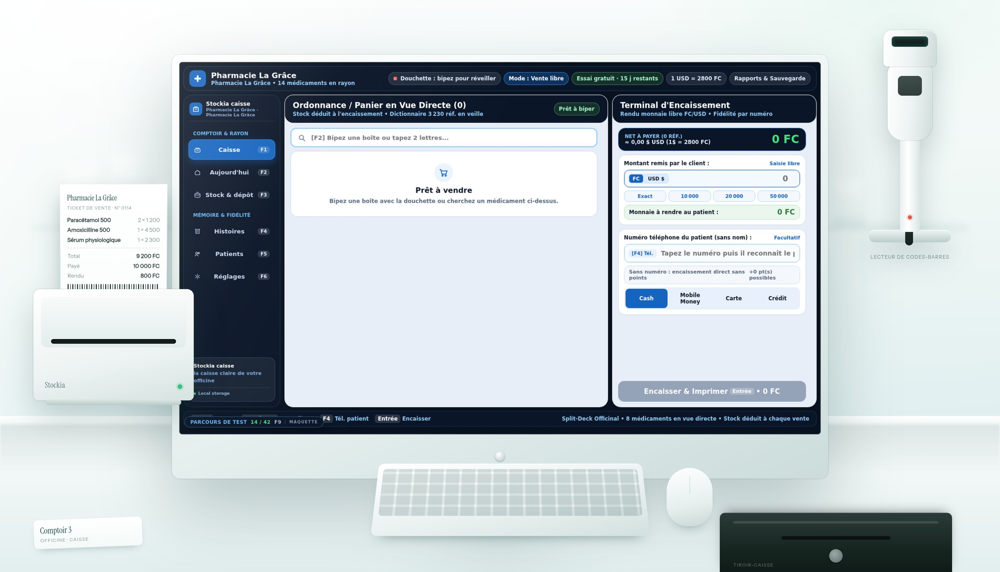

Stockia
Le terminal de vente des pharmacies. Un logiciel Windows et Android qui encaisse à la douchette, calcule la monnaie en francs et en dollars, et déduit le stock à chaque vente. Le reste — stock, péremption, crédits, fidélité — vient avec.
Windows & AndroidDouchette USBHors ligneReçu 58 / 80 mm

Le poste de vente complet, tel qu'il s'installe au comptoir d'une pharmacie :
- écran et caisse
- imprimante thermique
- ticket qui sort
- douchette code-barres
- clavier et souris
- tiroir-caisse
- bocaux du rayon, derrière